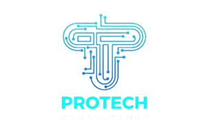

SOBRE NÓS
ACADEMY
CONTATO
CLIENTES

Desenvolvimento de Software
Sistemas de automação e gestão de processos, garantindo a melhor qualidade em aplicações e criação de novos serviços.
Sobre Nós
A ProTech Quality Consultancy é uma parceira estratégica comprometida com a excelência e a inovação tecnológica. Nossa missão é capacitar organizações a desenvolverem soluções tecnológicas de ponta que impulsionam negócios, maximizam a eficiência operacional e aumentam a lucratividade. Explore nossos princípios e agende uma consulta sem compromisso. Descubra como uma visão inovadora da TI pode ser o catalisador para transformar seu negócio em um líder de mercado.
Emprestar nossa vasta expertise em negócios, gestão, processos e tecnologia para impulsionar nossos clientes a novos patamares de competividade e excelência, assegurando que cada solução entregue esteja alinhada com as suas metas estratégicas.
Visão
Ser a referência definitiva em gestão de TI, reconhecida por nossa capacidade única de fornecer serviços tecnológicos sob medida, que atendem e superam as expectativas de cada cliente, promovendo um impacto duradouro e positivo em seus negócios.

Nos empenhamos em entregar resultados superiores, elevando constantemente o padrão de qualidade de todos os nossos projetos.

Estamos plenamente dedicados ao sucesso de nossos clientes, oferecendo suporte contínuo e soluções que realmente fazem a diferença.
Excelência
Comprometimento

Operamos com os mais altos padrões éticos, garantindo confiança e respeito em todas as nossas interações.

Mantemos um compromisso inabalável com a clareza e a comunicação aberta, facilitando relações de longo prazo com nossos clientes.

Fomentamos um ambiente de criatividade e pensamento disruptivo, desenvolvendo soluções que antecipam e atendem ás necessidades do futuro.
Integridade
Transparência
Inovação
ProTech Consultancy - Consultoria na área de T.I., segurança, outsourcing de profissionais de T.I., scrum e metodologia ágil, data science, softwares customizados, devops, squads ágeis e treinamentos.
Serviços
Links
Contato
Desenvolvimento de Software
Outsourcing / Squad ágeis
Devops
Data science
Segurança de dados
Treinamento ágil
Início
Carreiras
Contato
Blog
Av. Paulista, 2073 - Conjunto Nacional
Consolação, São Paulo - SP
(11) 91850-5030
contato@protechConsultancy.com